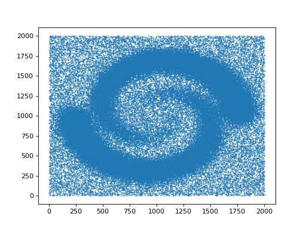
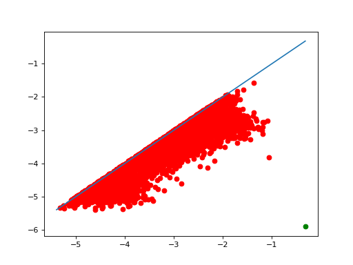
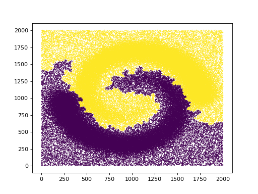
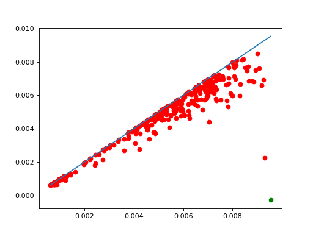
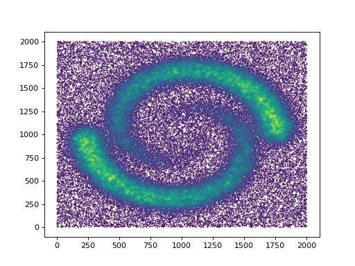

Clustering manual#
We provide an implementation of ToMATo [], a persistence-based clustering algorithm. In short, this algorithm uses a density estimator and a neighborhood graph, starts with a mode-seeking phase (naive hill-climbing) to build initial clusters, and finishes by merging clusters based on their prominence.
The merging phase depends on a parameter, which is the minimum prominence a cluster needs to avoid getting merged into another, bigger cluster. This parameter determines the number of clusters, and for convenience we allow you to choose instead the number of clusters. Decreasing the prominence threshold defines a hierarchy of clusters: if 2 points are in separate clusters when we have k clusters, they are still in different clusters for k+1 clusters.
As a by-product, we produce the persistence diagram of the merge tree of the initial clusters. This is a convenient graphical tool to help decide how many clusters we want.
import gudhi
from gudhi.datasets.remote import fetch_spiral_2d
data = fetch_spiral_2d()
import matplotlib.pyplot as plt
plt.scatter(data[:,0],data[:,1],marker='.',s=1)
plt.show()
(Source code, png, hires.png, pdf)
{kind=link}
{kind=link}

from gudhi.clustering.tomato import Tomato
t = Tomato()
t.fit(data)
t.plot_diagram()
(Source code, png, hires.png, pdf)
{kind=link}
{kind=link}

As one can see in t.n_clusters_, the algorithm found 6316 initial clusters. The diagram shows their prominence as their distance to the diagonal. There is always one point infinitely far: there is at least one cluster. Among the others, one point seems significantly farther from the diagonal than the others, which indicates that splitting the points into 2 clusters may be a sensible idea.
t.n_clusters_=2
plt.scatter(data[:,0],data[:,1],marker='.',s=1,c=t.labels_)
plt.show()
(Source code, png, hires.png, pdf)
{kind=link}
{kind=link}

Of course this is just the result for one set of parameters. We can ask for a different density estimator and a different neighborhood graph computed with different parameters.
t = Tomato(density_type='DTM', k=100)
t.fit(data)
t.plot_diagram()
(Source code, png, hires.png, pdf)
{kind=link}
{kind=link}

Makes the number of clusters clearer, and changes a bit the shape of the clusters.
A quick look at the corresponding density estimate
plt.scatter(data[:,0],data[:,1],marker='.',s=1,c=t.weights_)
plt.show()
(Source code, png, hires.png, pdf)
{kind=link}
{kind=link}

The code provides a few density estimators and graph constructions for convenience when first experimenting, but it is actually expected that advanced users provide their own graph and density estimates instead of point coordinates.
Since the algorithm essentially computes basins of attraction, it is also encouraged to use it on functions that do not represent densities at all.
- class gudhi.clustering.tomato.Tomato[source]#
This clustering algorithm needs a neighborhood graph on the points, and an estimation of the density at each point. A few possible graph constructions and density estimators are provided for convenience, but it is perfectly natural to provide your own.
- Requires:
SciPy, Scikit-learn or others (see
KNearestNeighbors) in function of the options.
- n_clusters_#
The number of clusters. Writing to it automatically adjusts labels_.
- Type:
int
- merge_threshold_#
minimum prominence of a cluster so it doesn’t get merged. Writing to it automatically adjusts labels_.
- Type:
float
- n_leaves_#
number of leaves (unstable clusters) in the hierarchical tree
- Type:
int
- leaf_labels_#
cluster labels for each point, at the very bottom of the hierarchy
- Type:
ndarray of shape (n_samples,)
- labels_#
cluster labels for each point, after merging
- Type:
ndarray of shape (n_samples,)
- diagram_#
persistence diagram (only the finite points)
- Type:
ndarray of shape (n_leaves_, 2)
- max_weight_per_cc_#
maximum of the density function on each connected component. This corresponds to the abscissa of infinite points in the diagram
- Type:
ndarray of shape (n_connected_components,)
- children_#
The children of each non-leaf node. Values less than n_leaves_ correspond to leaves of the tree. A node i greater than or equal to n_leaves_ is a non-leaf node and has children children_[i - n_leaves_]. Alternatively at the i-th iteration, children[i][0] and children[i][1] are merged to form node n_leaves_ + i
- Type:
ndarray of shape (n_leaves_-n_connected_components, 2)
- weights_#
weights of the points, as computed by the density estimator or provided by the user
- Type:
ndarray of shape (n_samples,)
- params_#
Parameters like metric, etc
- Type:
dict
- __init__(graph_type='knn', density_type='logDTM', n_clusters=None, merge_threshold=None, **params)[source]#
- Parameters:
graph_type¶ (str) – ‘manual’, ‘knn’ or ‘radius’. Default is ‘knn’.
density_type¶ (str) – ‘manual’, ‘DTM’, ‘logDTM’, ‘KDE’ or ‘logKDE’. When you have many points, ‘KDE’ and ‘logKDE’ tend to be slower. Default is ‘logDTM’. The values computed for ‘DTM’ or ‘KDE’ are not normalized (this does not affect the clustering).
metric¶ (str|Callable) – metric used when calculating the distance between instances in a feature array. Defaults to Minkowski of parameter p.
kde_params¶ (dict) – if density_type is ‘KDE’ or ‘logKDE’, additional parameters passed directly to sklearn.neighbors.KernelDensity.
k¶ (int) – number of neighbors for a knn graph (including the vertex itself). Defaults to 10.
k_DTM¶ (int) – number of neighbors for the DTM density estimation (including the vertex itself). Defaults to k.
r¶ (float) – size of a neighborhood if graph_type is ‘radius’. Also used as default bandwidth in kde_params.
eps¶ (float) – (1+eps) approximation factor when computing distances (ignored in many cases).
n_clusters¶ (int) – number of clusters requested. Defaults to None, i.e. no merging occurs and we get the maximal number of clusters.
merge_threshold¶ (float) – minimum prominence of a cluster so it doesn’t get merged.
symmetrize_graph¶ (bool) – whether we should add edges to make the neighborhood graph symmetric. This can be useful with k-NN for small k. Defaults to false.
p¶ (float) – norm L^p on input points. Defaults to 2.
q¶ (float) – order used to compute the distance to measure. Defaults to dim.
dim¶ (float) – final exponent in DTM density estimation, representing the dimension. Defaults to the dimension, or 2 when the dimension cannot be read from the input (metric is “precomputed”). Beware that when the dimension is large, this can easily cause overflows, see
DTMDensityfor detailsn_jobs¶ (int) – Number of jobs to schedule for parallel processing on the CPU. If -1 is given all processors are used. Default: 1.
params¶ – extra parameters are passed to
KNearestNeighborsandDTMDensity.
- fit(X, y=None, weights=None)[source]#
- Parameters:
X¶ ((n,d)-array of float|(n,n)-array of float|Sequence[Iterable[int]]) – coordinates of the points, or distance matrix (full, not just a triangle) if metric is “precomputed”, or list of neighbors for each point (points are represented by their index, starting from 0) if graph_type is “manual”. The number of points is currently limited to about 2 billion.
weights¶ (ndarray of shape (n_samples)) – if density_type is ‘manual’, a density estimate at each point
y¶ – Not used, present here for API consistency with scikit-learn by convention.